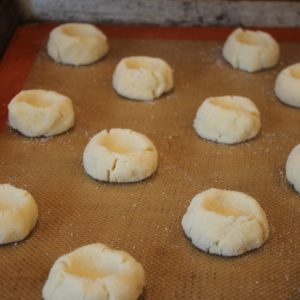

Butter Cookie Recipe

Description
A simple cookie primarily of butter, sugar, and flour. Vanilla or almond extract makes for a great flavor while some enjoy other flavors like orange or lemon. Quick and easy to make with a thumbprint to give them a special touch.
Ingredients
- Sugar - 1 cup
- Butter - 1 cup
- Egg - 1
- Flour - 2 2/3 cup
- Salt 1/4 teaspoon
- Vanilla extract - 2 teaspoons
- Almond extract - 1 teaspoon
Directions
- Preheat oven to 325 degrees F
- Mix butter, sugar, egg, almond extract, and vanilla extract in large bowl
- In separate bowl combine flour and salt
- Add flour mixture to butter mixture and stir until combined
- Roll dough into 1 inch balls and place on ungreased cookie sheet
- Push thumbprints into dough balls
- Bake for 8 minutes
- Remove from oven and cool on wire rack
Home